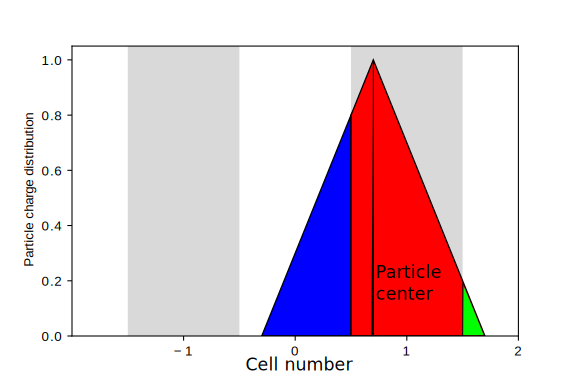

Particle in Cell methods
I think it might finally be about time to do some plasma physics discussion on this blog, stay true to the name and so on…
Basically the only actual “scientific” work I have actually done with plasmas up until now is writing a PIC simulation, PIC standing for Particle-in-Cell. I thought I would take this opportunity to explain in my own words what the concept is - I think it’s a clever one.
There are many reasons why you might want to simulate a plasma. Simulations are often way cheaper than making a tokamak and causing the plasma to develop turbulence, or sending out a probe to watch check solar flares for traces of magnetic reconnection. There’s also the case of needing simulations to understand and explain your experimental results. For now, however, let’s just assume you have a burning desire to make a few pretty plots and animations like these using data that you don’t have simple access to via experiment.
Plasma simulation in general
Plasmas are, in general, difficult to simulate. Many of the interesting processes in plasmas that you would like to simulate occur far from equilibrium, both spatial and thermal. For example, you’d like to simulate interactions between a plasma and a laser pulse (this is, in fact, what I did for my engineering thesis). This is a massively non-equilibrium process. This mostly rules out fluid simulations such as two-fluid and magnetohydrodynamics, which are based on averaging the Vlasov equation over all possible velocities. You could, in theory, use the Vlasov equation directly - but that’s a pretty darn high dimensional problem to be solving a PDE on (though something I most certainly want to try my hand at, one of these days!).
Suppose you want to take another approach. Maybe you like your Newtonian, old fashioned dynamical particle trajectory ODEs, you’ve dabbled in some N-body simulations, maybe you’ve done a bit of molecular dynamics. You could imagine putting a bunch of charged particles into a simulation, calculating forces between those directly and letting them evolve over time.
Unfortunately, there is a major flaw in that plan. You’ve got long range (Coulomb) \(r^{-2}\) interactions between huge numbers of particles, so you cannot use the neat trick common in molecular dynamics of only including a few neighbor particles in your simulation. This means your simulation will scale as full \(O(N^2)\) in the number of particles if you do that (though there have been attempts at doing that recently). I guess you could also try a Barnes-Hut treecode of some sort, and that also appears to have been done - that doesn’t seem like it’s caught on, though, whatever the reason.
We’ve now set the stage and can move on to the main attraction…
The particle in cell method
The logic for a PIC is as follows, starting from the simple molecular dynamics or N-body framework:
If we were to know the force on each particle for every time step, we could push them - update their velocities and positions as usual, in \(O(N)\) steps. Each particle is assumed independent of others.
-
It’s hard to calculate the forces directly in \(O(N^2)\) steps. On the other hand, It’s relatively easier to solve a PDE for the electromagnetic field given a charge and current distribution. The particles we’re moving are charged, so we can do the following translation:
Particle positions \(\implies\) charge distribution
Particle positions and velocities \(\implies\) current distribution
This means we could deposit the particles onto a grid or mesh by some kind of interpolation. We can also set the grid size so that many particles go into a single grid cell: this implies that the number of grid cells is much lower than our particle count. That, in turn, fits our assumptions for plasmas 1. A picture is worth a thousand words, so here’s a very basic example of a particle’s charge with a linear (triangular, and thus, centered on the middle) distribution being split between three cells.
 Once we have the charge and current distribution on our grid, we can use those quantities to solve Maxwell’s equations for the electromagnetic field. You could, for example, use a spectral method or a relaxation algorithm, like conjugate gradients.
Once we know the fields at the grid cell locations, we can gather the field from those to the particle locations. Remember step 1, where we wished for forces - readily available given fields - at particle locations? Well, here we go, wish granted!
goto 1
And that’s it, the particle-in-cell method in a nutshell. Of course, logically it makes more sense to start from 2. (as you would usually start your simulation with a set of initial conditions for the particle positions, velocities and maybe external fields), but to me it’s cleaner narratively to think of the algorithm in this order.
The advantages
It’s close to fundamental physics and thus understandable! You get a full picture of what each of the particles does, how the fields behave, while making very few assumptions.
It’s lightning fast! The \(O(N^2)\) force calculation is reduced to the complexity of your three replacement steps. While you can expect deposition and gathering to be roughly \(O(Nm)\) (\(m\) being the number of cells), \(N\) is much larger than \(m\), and the field solver is going to scale independently of \(N\) - so that’s still a massive gain over direct summation.
It’s easy to parallelize! Each particle is essentially independent for the pushing step (as they only interact with each other via fields), so those movements are trivially parallel. Grid operations can also be done in parallel (though admittedly I haven’t looked into that much, yet - I fully intend to do so).
And of course, no description of a simulation method is complete without…
The disadvantages
The method is mostly explicit, so that limits your time step and grid size quite a lot. Otherwise, you get spurious instabilities.
Statistical noise makes life a pain when you’re working on PIC simulations, precisely because you’re modeling your large numbers of real particles with fewer virtual discrete ones. The trick seems to be increasing the particle numbers, but Wikipedia claims that this source of error is more figured out for traditional grid methods. In a way, this also means PICs are a prime target for GPUs, as exhibited by PIConGPU.
Still, PICs are used in many awesome applications, such as plasma turbulence research, and their parallelizability means they’re only going to get more important in the coming exascale computing era.
I’ll be writing a few follow-up posts going over particular aspects of PIC codes - tricks I’ve picked up along the way, etc. Stay tuned!
References
Relativistic kinetic turbulence video by Joonas Nättilä, using the plasmabox code.
PythonPIC, my less-than-amazing engineering thesis code.
- 1
-
If you want to learn more about those, I don’t feel like I can give this subject justice better than chapter 1-1 of Birdsall and Langdon’s seminal Plasma Physics via Computer Simulation text.
Comments
Comments powered by Disqus